Copyright © 2008, 2026 Obeo - All rights reserved. This program and the accompanying materials are made available under the terms of the Eclipse Public License v2.0
Cinematic Designer est un outil de conception d'écrans d’application, permettant de décrire la structure d’une IHM (modélisation statique) et son comportement (modélisation dynamique).
Cinematic Designer apporte le point de vue Cinematic Views qui permet de :
Un assistant de création de modèles Cinematic est accessible via le menu :
File > New > Other... > Cinematic Model (catégorie IS Designer)
Ou bien le menu contextuel sur un projet :
New > Other... > Cinematic Model (catégorie IS Designer)
Ou encore le raccourci clavier
Ctrl+N
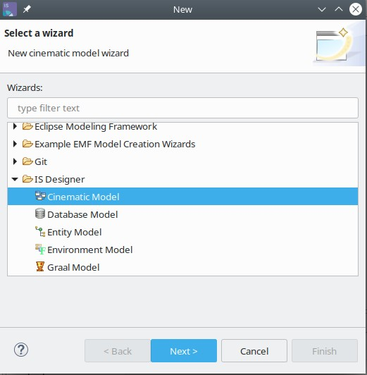
Cet assistant permet de définir :
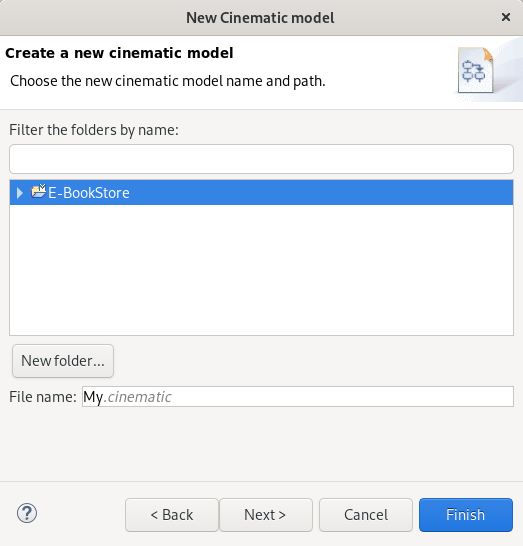
La dernière page de l’assistant permet de définir le toolkit à utiliser, et d’initialiser le modèle avec un diagramme de Mockup et un diagramme de Flow :
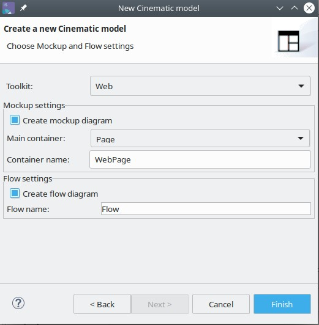
Une fois l’assistant validé, le modèle est créé, ainsi que les représentations Package Diagram et UI Structure. Les représentations demandées en création sont ouvertes pour commencer à modéliser.
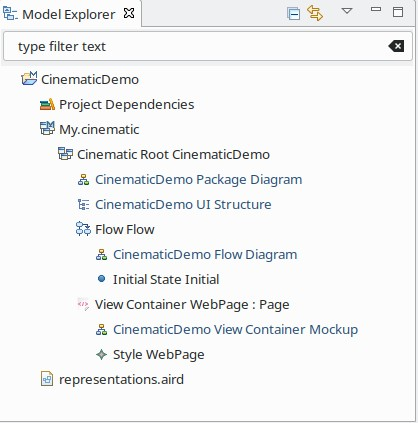
Lorsqu’un modèle Cinematic est créé à l’aide de cet assistant dans un Modeling Project, les points de vue Cinematic Views et Environment Views sont automatiquement activés.
Le point de vue Cinematic Views permet de visualiser et modifier un modèle Cinematic via plusieurs types de diagrammes tels que décrits dans la section suivante. Le point de vue Environment Views contient la définition des vues de propriétés.
Un assistant de création de modèles Toolkits est accessible via le menu :
File > New > Other... > Toolkits Model (catégorie IS Designer)
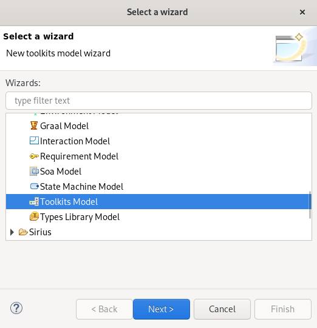
Cet assistant permet de définir :
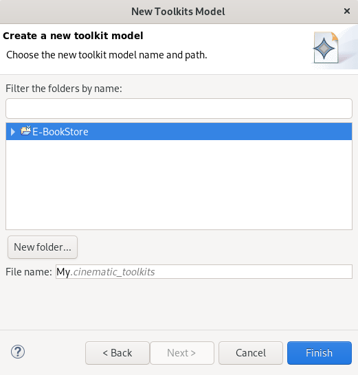
Une fois l’assistant validé, le modèle est créé.
Les points de vue Cinematic Views et Environment Views sont automatiquement activés lors de la création du modèle avec l’assistant dans un Modeling Project. Aucune activation manuelle n’est nécessaire.
Le menu contextuel Viewpoints Selection du projet permet de vérifier les points de vue sélectionnés.
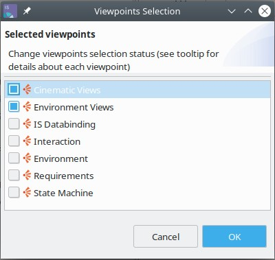
Si le projet est d’un autre type, il manque alors un fichier
representations file (fichier
.aird). L’action de menu contextuel
Configure > Convert to Modeling Project permet de remédier à cette situation.
Pour ajouter le modèle Cinematic à un representations file existant, choisir Add Model dans le menu contextuel du Project Dependencies, puis sélectionner la ressource du modèle Cinematic.
Après l’ajout d’un modèle Cinematic à une session existante, sélectionner les points de vue Cinematic Views et Environment Views dans le menu contextuel Viewpoints Selection du projet s’ils ne sont pas déjà activés.
Le modeleur Cinematic apporte les représentations suivantes :
| Package Diagram | diagramme permettant de modéliser les Package, Flow et ViewContainer. |
| UI Structure | représentation arborescente permettant de modéliser la description haut niveau statique de l’IHM. |
| View Container Mockup | diagramme permettant de modéliser la structure et l’apparence des IHM et éditer les bindings. |
| Layout Diagram | diagramme de consultation des composants et composites d’un Layout. |
| Flow Diagram | diagramme permettant de modéliser la dynamique de l’IHM. |
Les représentations suivantes peuvent être ouvertes en mode «Vue Partielle». Le fonctionnement des Vues Partielles est décrit dans la section ISD – Outillage environnement / Vues Partielles
Le Package Diagram est défini sur un objet de type Package, appelé ci-après package courant.
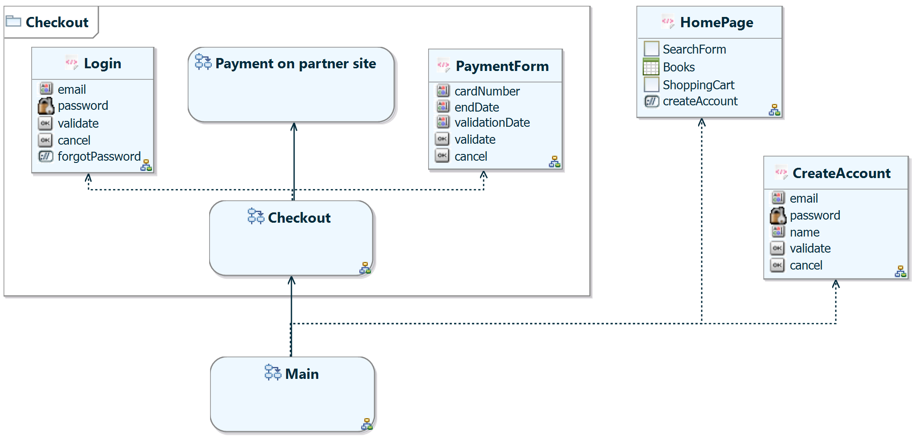
Sont affichés sur ce diagramme :
Pour un ViewContainer, sont affichés :
Les outils fournis par la palette sont :
|
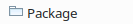 |
Création d’un Package. |
|
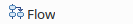 |
Création d’un Flow. |
|
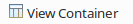 |
Création d’un ViewContainer. |
Les autres outils disponibles sont
La création d’un diagramme sur un
Package, un
Flow ou un
ViewContainer se fait par le menu contextuel
New > #Nom du diagramme#.
La navigation vers un diagramme existant lié à un
Package, un
Flow ou un
ViewContainer se fait par le menu contextuel
Open > #Nom du diagramme#.
Un double-clic sur un
Package, un
Flow ou un
ViewContainer déclenche la création d’un diagramme s’il n’existe pas, ou bien son ouverture s’il existe.
La représentation UI Structure fournit une vue de haut niveau de la structure des écrans de l’application modélisée, sous forme arborescente.
Les écrans sont décrits en termes de ViewContainer pouvant contenir :
Les ViewContainer peuvent être contenus dans des Package, permettant une structuration de ces différents éléments.
Cette représentation fournit en outre le moyen d’associer un toolkit au modèle Cinematic. Le toolkit est un modèle externe définissant les widgets utilisables pour la définition des écrans.
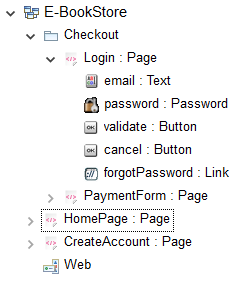
Les éléments affichés sont :
Les outils disponibles sont :
Cette représentation vient compléter la représentation UI Structure, apportant la modélisation de la disposition graphique des composants de l’IHM. Elle permet de créer et positionner les ViewElement dans les ViewContainer. De plus, elle permet d'éditer les bindings sur ces derniers.
La palette propose un outil de création de ViewElement ou ViewContainer par widget disponible dans le toolkit utilisé. Son contenu dépend donc du toolkit actif sur le modèle Cinematic courant.
Voici les deux palettes dans le contexte des deux Toolkits fournis avec le studio IS Designer :
| Toolkit Web | Toolkit Swt | |
|
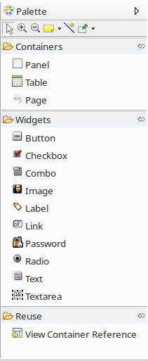 |
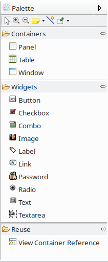 |
Par défaut, le libellé des éléments présentés sur le View Container Mockup est déterminé de la manière suivante :
label est défini, alors il est utilisé,
label est défini, alors il est utilisé,
Le calque
Example modifie le libellé des
ViewElement, permettant de visualiser l’IHM avec des données d’exemple. Le libellé est alors calculé à partir de l’expression AQL
exampleExpression du style du widget.
| Calque Example désactivé | Calque Example activé | |
|
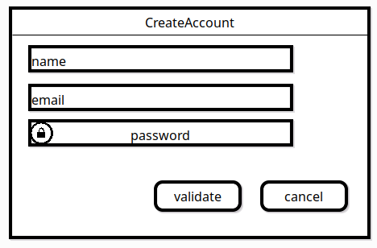 |
Chaque repositionnement ou redimensionnement de ViewElement sur ce diagramme déclenche la mise à jour de la structure de Layout du ViewContainer représenté sur le diagramme :
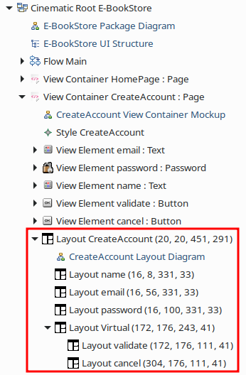
La structure de
Layout porte les positionnements graphiques des éléments du Mockup, organisés en structure de type « Grid Layout ». Un élément de Layout est défini par une position (coordonnées x, y), une taille (largeur, hauteur), une direction (horizontale ou verticale) et une liste de Layout fils.
L’algorithme de mise à jour de la structure de Layout procède à une analyse de l’espace en passes successivement verticales et horizontales. Dans l’exemple ci-dessus, l’espace est découpé verticalement en quatre compartiments, dont le dernier est découpé horizontalement en deux compartiments lors d’une deuxième passe.
Le choix de direction est déterminé par la direction dans laquelle l’espace se découpe le plus, avec en cas d'égalité un choix par défaut en découpage vertical.
Un élément de Layout peut être lié ou non à un ViewElement suivant qu’il représente le Layout d’un ViewElement ou bien le Layout d’un espace structurant (tel que le Layout qui englobe les deux boutons de l’exemple ci-dessus).
Le diagramme Layout Diagram permet de visualiser cette structure de Layout (décrite dans le chapitre suivant).
Afin de faire le lien avec les couches SOA et Entity, les ViewContainer peuvent être liés par binding à des DTO ou des entités, et les ViewElement peuvent être liés par binding à des attributs ou des références de DTO ou entités.
La fonctionnalité de binding est accessible en menu contextuel de la vue Mockup, sous l’entrée de menu Binding....
Cette action de menu ouvre un dialogue de sélection permettant de lier par binding des DTO ou entités à un ViewContainer, ou des attributs ou références à un ViewElement.
Pour un
ViewContainer, le dialogue présente les DTO ou entités accessibles :
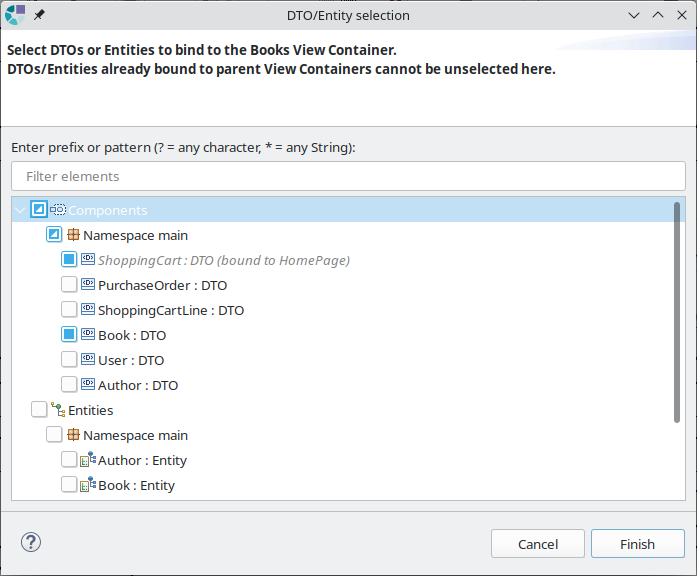
Plusieurs DTO ou entités peuvent être sélectionnés. Chaque sélection ou désélection de DTO ou entité donne lieu à la création ou à la suppression d’un objet de binding BindingInfo.
Si un binding supprimé entraîne la suppression de bindings de références contenus, un dialogue de confirmation est affiché.
Si des ViewContainer parents sont déjà liés par binding à des DTO ou entités, ces DTO ou entités sont sélectionnés et leur désélection est inactivée. La modification de ce binding est faisable dans le dialogue de binding du ViewContainer parent en question.
Pour un ViewElement, le dialogue présente les DTO ou entités liés par binding aux ViewContainer parents du ViewElement sélectionné :
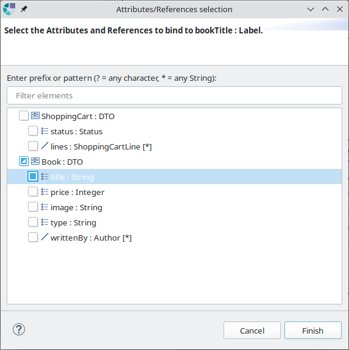
Les DTO ou entités peuvent être dépliés pour accéder à des propriétés de DTO ou entités référencés. Plusieurs attributs ou références peuvent être sélectionnés. Chaque sélection ou désélection donne lieu à la création ou à la suppression d’un objet de binding BindingReference contenu dans le BindingInfo du ViewContainer correspondant.
Lorsque des bindings sont définis sur un ViewElement ou un ViewContainer, le glisser-déposer dans le diagramme de Mockup n’est possible que si les bindings restent valides avec le ViewContainer destination.
Le double-clic sur les éléments du diagramme de Mockup permet de naviguer vers d’autres diagrammes en les créant à la volée s’ils n’existent pas :
Lorsque des diagrammes sont créés pour un élément donné, ceux-ci sont navigables via le menu contextuel, dans le sous-menu Open.
Ce diagramme a pour simple but de visualiser une structure de Layout. Il n’a pas vocation à éditer cette structure, et sa palette est vide.
L’action Preview Layout du menu contextuel sur le fond du diagramme permet d’appliquer les données de positionnement contenues dans les objets Layout aux formes affichées sur le diagramme.
IS Designer > Preview Layout
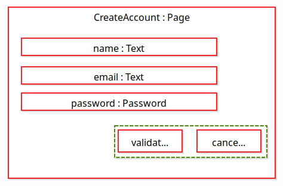
Les Layout liés à un ViewElement sont représentés avec une bordure en trait plein, ceux ayant pour rôle de structurer un compartiment de l’espace sont représentés avec une bordure en trait pointillé.
Les Layout découpant l’espace verticalement sont présentés en rouge, ceux découpant l’espace horizontalement sont présentés en vert.
Le Flow Diagram est défini sur un élément de type Flow.
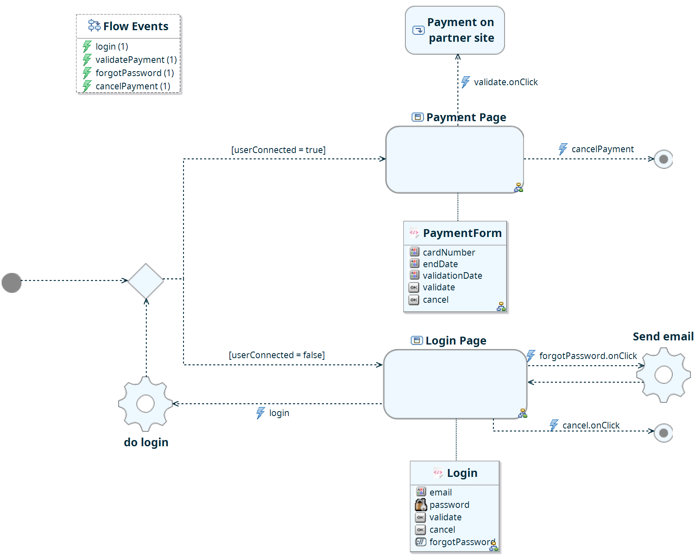
Sont affichés sur ce diagramme :
Les outils proposés par la palette sont :
| States | |
|
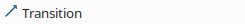 |
Tracée entre deux états, permet de créer une transition. Si la transition est issue d’un ViewState, déclenche l’ouverture de l’assistant de sélection d'événements déclencheurs. |
|
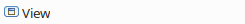 |
Crée un ViewState. Déclenche l’ouverture de l’assistant de sélection de ViewContainer. |
|
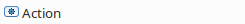 |
Crée un ActionState. |
|
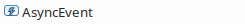 |
Crée un AsyncEventState. |
|
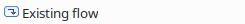 |
Crée un SubflowState et affiche l’assistant de sélection de Flow existant. |
|
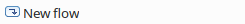 |
Crée un SubflowState et l’associe à un nouveau Flow créé dans la même action. |
| Ports | |
|
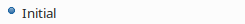 |
Crée un InitialState. |
|
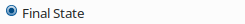 |
Crée un FinalState. |
|
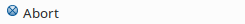 |
Crée un AbortState. |
|
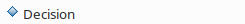 |
Crée un DecisionState. |
| Events | |
|
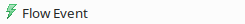 |
Présent seulement si le calque Flow Events est activé. Crée un FlowEvent dans le conteneur Flow Events. |
| View Containers | |
|
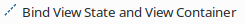 |
Crée un lien d’association entre un ViewState et un ViewContainer déjà présent sur le diagramme. |
|
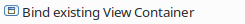 |
Crée un lien d’association entre un ViewState et un ViewContainer existant. Déclenche l’affichage d’un dialogue de sélection de ViewContainer. |
|
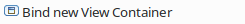 |
Crée un lien d’association entre un ViewState et un ViewContainer créé dans la même action. Déclenche l’affichage d’un dialogue de sélection du Widget dont le ViewContainer représentera une instance. |
Autres outils :
| Double-clic sur une Transition | Ouvre le dialogue de sélection et de création d'événements déclencheurs |
| Double-clic sur un ViewState | Ouvre le dialogue de sélection de ViewContainer |
| Édition directe des libellés | Sur les états, les conditions de garde, les Flow Events et les View Containers |
| Reconnexion | Des transitions |
| Suppression | Les éléments du diagramme |
Outils de navigation :
Menu contextuel :
L’apparence d’un ViewState peut prendre celle du diagramme de Mockup du View Container qui lui est associé par l’action
Apply Mockup Image du menu contextuel, permettant d’obtenir ce genre de rendu visuel :
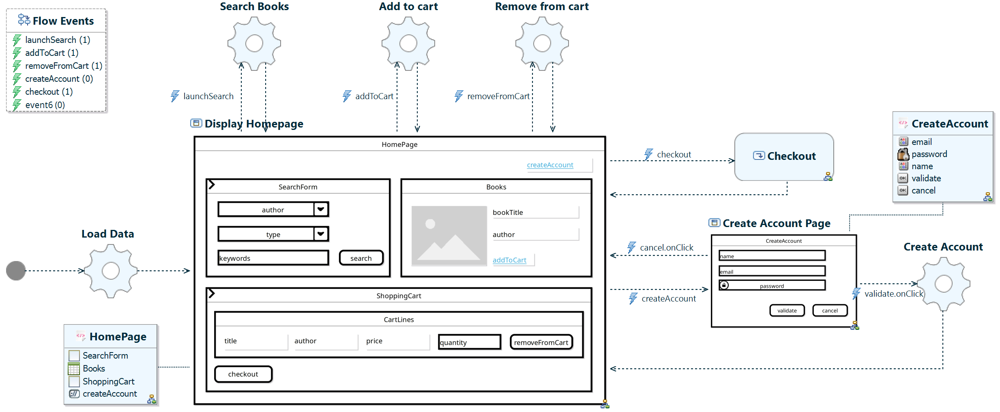
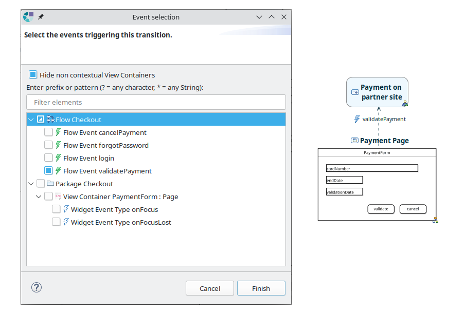
Ce dialogue permet de sélectionner des types d'événements. Il présente l’ensemble des types d’événements supportés par les widgets utilisés dans le modèle Cinematic, ainsi que l’ensemble des événements logiques définis dans le Flow.
Les événements des widgets sont classés sous la hiérarchie des View Elements, les événements logiques sont regroupés sous un nœud virtuel « Flow events ».
Les événements déclencheurs de la transition sont cochés.
La zone de filtre textuel permet de réduire le contenu de l’arbre de manière à n’afficher que les éléments dont le libellé se conforme au filtre. L’affichage d’un élément dont le libellé se conforme au filtre entraîne cependant l’affichage des éléments parents jusqu’à la racine de l’arbre ainsi que tous ses éléments fils. Le métacaractère ‘*’ est supporté pour correspondre à une chaîne de caractères quelconque et ‹?› pour correspondre à un caractère quelconque.
La case à cocher « Hide non contextual View Containers » permet de cacher les View Containers qui ne sont pas liés au View State source de la transition. À l’affichage du dialogue elle est cochée si au moins un View Container est lié au View State source.
L’arbre de sélection d’événement permet une sélection multiple. Le dialogue peut donc être validé avec une sélection vide, simple ou multiple.
À la validation du dialogue,
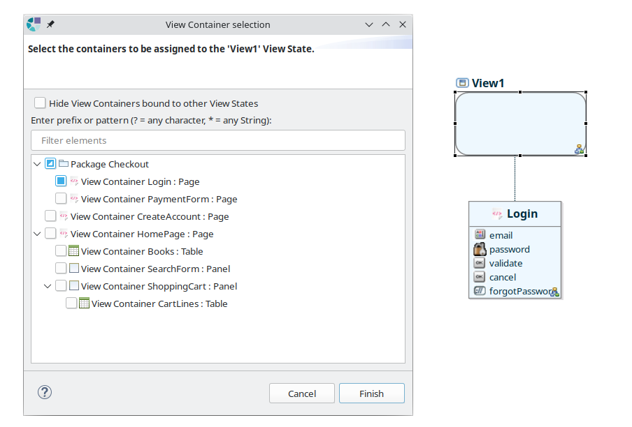
Ce dialogue permet de sélectionner des View Containers. Il présente l’ensemble des View Containers du modèle Cinematic présentés sous leur hiérarchie de contenance.
Les View Containers associés au View State concerné sont cochés.
La zone de filtre textuel permet de réduire le contenu de l’arbre de manière à n’afficher que les éléments dont le libellé se conforme au filtre. L’affichage d’un élément dont le libellé se conforme au filtre entraîne cependant l’affichage des éléments parents jusqu’à la racine de l’arbre ainsi que tous ses éléments fils. Le métacaractère ‘*’ est supporté pour correspondre à une chaîne de caractères quelconque et ‹?› pour correspondre à un caractère quelconque.
La case à cocher « Hide View Containers bound to other View States » permet de cacher les View Containers déjà liés à des View States. Elle est cochée à l’affichage du dialogue. Des containers déjà associés peuvent cependant être affichés malgré le filtre.
L'état partiellement coché d’une case indique que des sous-éléments sont sélectionnés. Les éléments partiellement cochés ne font pas partie de la sélection prise en compte à la validation du dialogue.
À la validation du dialogue, la liste des éléments associés au View State est mise à jour avec la sélection faite par l’utilisateur.
Le métamodèle Cinematic est extensible par définition de toolkits.
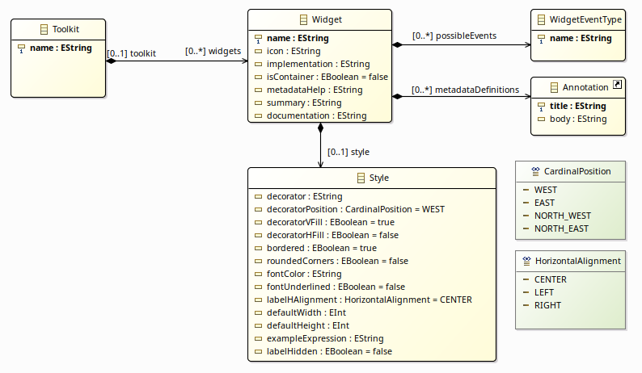
De manière succincte, la création d’un toolkit consiste en la création de widgets, et sous chaque widget la création des types d'événements qu’il peut déclencher.
Par exemple, un toolkit peut contenir un widget button avec un événement buttonPressed.
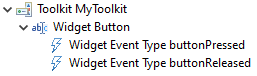
La création de toolkits est une tâche réalisée par l'équipe réalisant l’outillage de l'équipe d’analyse / conception / développement.
À ce titre, la définition de toolkits se fait par l'éditeur EMF arborescent classique.
Pour une meilleure expérience utilisateur il est possible d’associer une icône à chaque widget. Cette icône est affichée devant le nom des ViewElement utilisant le widget, et dans la palette du diagramme de Mockup.
Certains attributs du toolkit sont utilisés pour restituer des informations aux utilisateurs finaux
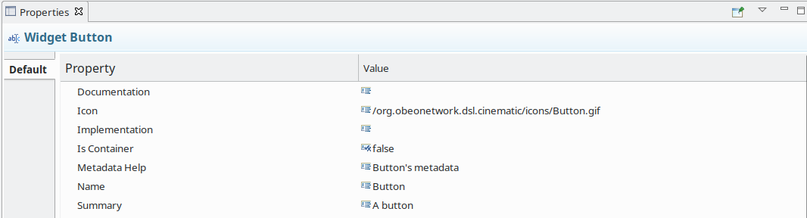
Ainsi :
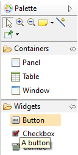
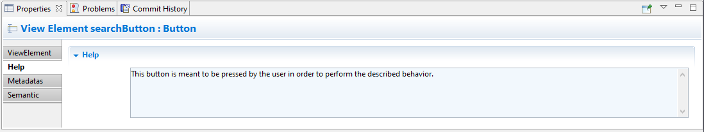
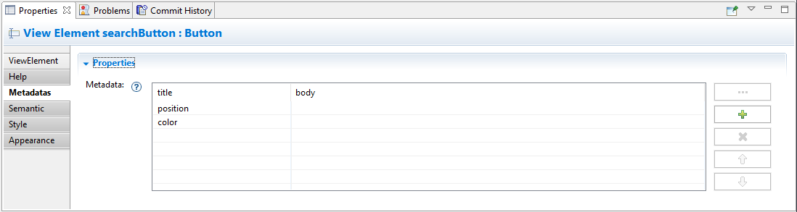
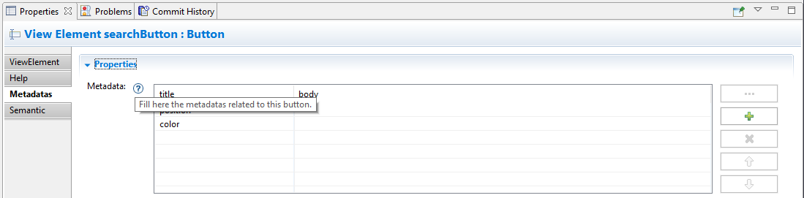
Un Widget peut définir un style. Le style porte les attributs suivants :
decorator : Chemin vers l’image svg qui décore le widget (cas de combo box, radio button, etc.)
decoratorPosition : position cardinale du décorateur (east pour combo box, west pour radio button, etc.)
decoratorVFill : booléen spécifiant si le décorateur doit suivre le redimensionnement vertical (valeur par défaut égale à vrai)
decoratorHFill : booléen spécifiant si le décorateur doit suivre le redimensionnement horizontal (valeur par défaut égale à faux)
bordered : booléen spécifiant si une bordure est visible (faux pour link ou pour label)
roundedCorners : booléen spécifiant si les coins doivent être arrondis (vrai pour button)
fontColor : couleur de la police de caractères utilisée pour le libellé. Les couleurs disponibles sont celles définies par la classe
org.eclipse.swt.SWT par les champs dont le nom commence par « COLOR_ ». Ainsi, une couleur désignée par la chaîne « BLACK » désigne le champ
org.eclipse.swt.SWT.COLOR_BLACK.
fontUnderlined : booléen spécifiant si la police de caractères utilisée pour le libellé est soulignée (vrai pour link)
labelHAlignment : alignement du texte à gauche, droite, ou centre
defaultWidth : largeur par défaut utilisée à la création d’un View Element
defaultHeight : hauteur par défaut utilisée à la création d’un View Element
exampleExpression : Expression AQL définie dans le contexte du
ViewElement (la variable self est instance de
ViewElement), définissant le libellé des
ViewElement sur le diagramme Mockup lorsque le calque
Example est activé
labelHidden : booléen spécifiant si le libellé du
ViewElement représentant ce
Widget doit être caché (utile pour les conteneurs tels que Page, Panel, ...)